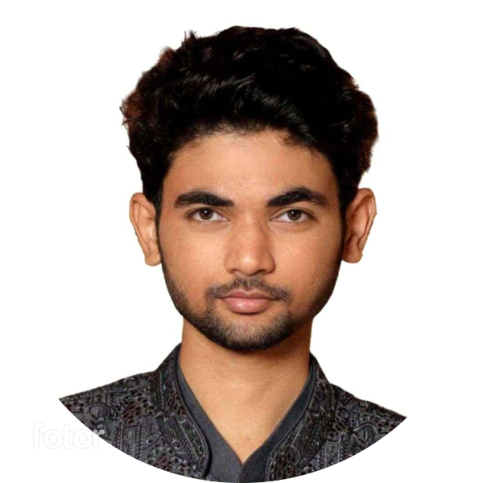

Aman Neelkamal Kharchan
Objectives
-
To leverage my problem solving skills and positive attitude in a customer service environment to deliver more delightful experiences.
-
Customer service representative seeking a part-time position to help surpass customer expectations.
-
Seeking a customer service role to apply my conflict resolution skills in a meaningful way to enhance positive experiences for customers
-
Customer service manager looking to utilize my interpersonal skills in a leadership role
Education:
- Pre Graduation degree in BCA
- Post Graduation degree in MCA
Work Experience:
- I workes at xyz private limited for almost 2.5 years
- Served at non profit organization for 6 months as a technical support
- I have been doing freelancing and have experience on hands on projects
Skills:
- Programming Language:
- Microsoft Office
- Good Communication
Achievements:
- Gold medal in HACKATHON
- Acer in Post Graduation
PROJECTS: